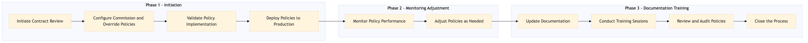

This process document outlines the management of airline commissions and overrides within the OTA (Expedia Group) and TMC (Amex GBT / SAP Concur) systems.
| Trigger | Initiation of a new contract or change in existing contract terms involving airline commissions and overrides. |
| Outcome | Successful implementation and management of airline commission and override policies, ensuring accurate financial reporting and compliance with contractual agreements. |
| Systems | Partner Central Amadeus NDC Sabre GDS Travelport EVC One Key TravelAds AWS SageMaker Snowflake Kafka Salesforce Tableau |

Click to enlarge
| Step | Name & Pain Point | Role | System | Input | Output | KPI | Flags |
|---|---|---|---|---|---|---|---|
| 1.1 | Initiate Contract Review Complexity in interpreting contract terms | OTA/TMC Contract Manager | Partner Central, Amadeus NDC, Sabre GDS, Travelport, EVC, One Key, TravelAds | Contract details and terms | Approved contract with commission and override policies | Time to contract approval within 5 business days | ◆ Decision |
| 1.2 | Configure Commission and Override Policies System integration issues | OTA/TMC System Administrator | AWS SageMaker, Snowflake, Kafka, Salesforce, Tableau | Approved contract details | Configured policies in OTA and TMC systems | 100% accuracy in policy configuration | ⚠ Exception |
| 1.3 | Validate Policy Implementation Data validation challenges | OTA/TMC QA Analyst | AWS SageMaker, Snowflake, Kafka, Salesforce, Tableau | Configured policies | Validation report | 0% policy implementation errors | ◆ Decision |
| 1.4 | Deploy Policies to Production Production deployment risks | OTA/TMC System Administrator | AWS SageMaker, Snowflake, Kafka, Salesforce, Tableau | Validated policies | Policies deployed in production environment | Deployment completed within 2 business days | ⚠ Exception |
| 1.5 | Monitor Policy Performance Real-time monitoring challenges | OTA/TMC Financial Analyst | AWS SageMaker, Snowflake, Kafka, Salesforce, Tableau | Deployed policies | Performance metrics and reports | 95% policy adherence rate | ◆ Decision |
| 1.6 | Adjust Policies as Needed Dynamic policy adjustment complexity | OTA/TMC Contract Manager | Partner Central, Amadeus NDC, Sabre GDS, Travelport, EVC, One Key, TravelAds | Performance metrics and reports | Adjusted policies | 100% policy adjustments based on performance data | ⚠ Exception |
| 1.7 | Update Documentation Documentation management | OTA/TMC Compliance Officer | Salesforce, Tableau | Adjusted policies | Updated documentation and training materials | 100% updated documentation within 3 business days | ⚠ Exception |
| 1.8 | Conduct Training Sessions Employee engagement | OTA/TMC Trainer | Salesforce, Tableau | Updated documentation and training materials | Training completion records | 100% employee participation in training sessions | ⚠ Exception |
| 1.9 | Review and Audit Policies Comprehensive auditing | OTA/TMC Internal Auditor | AWS SageMaker, Snowflake, Kafka, Salesforce, Tableau | Deployed policies and performance metrics | Audit report | 0% policy compliance issues identified | ◆ Decision |
| 1.10 | Close the Process Final process closure | OTA/TMC Project Manager | Salesforce, Tableau | Audit report and training completion records | Process closure documentation | Process closed within 1 business day after audit completion | ⚠ Exception |